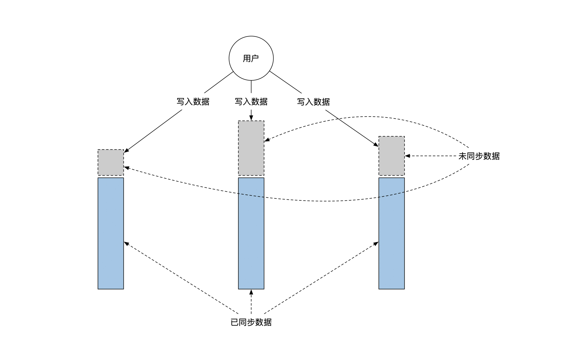
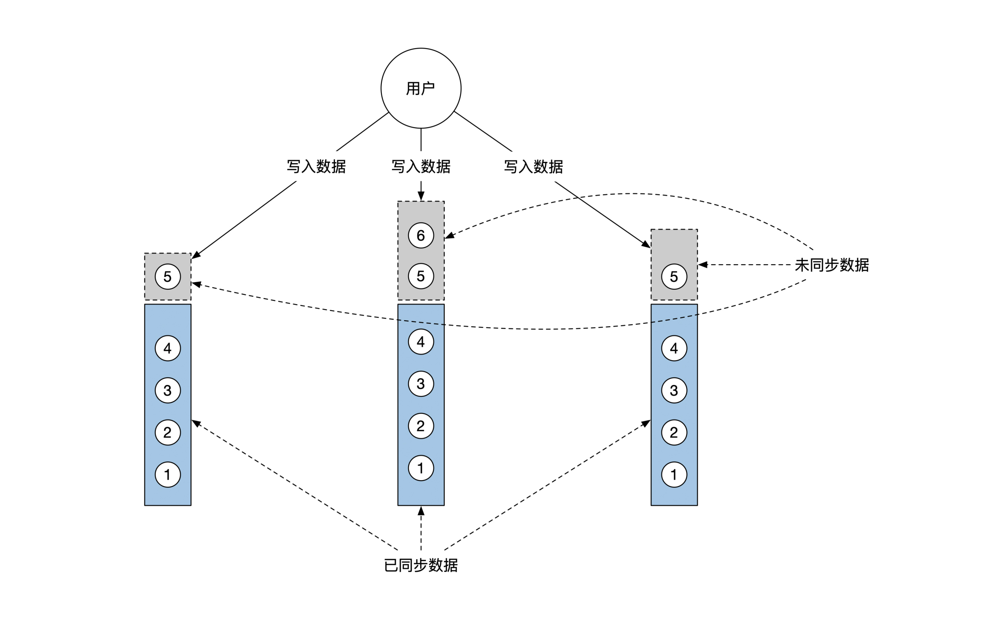
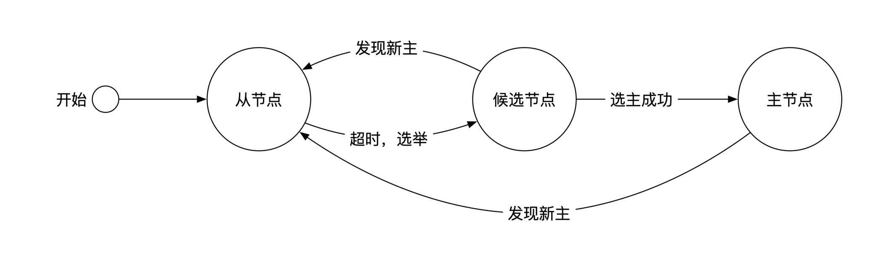
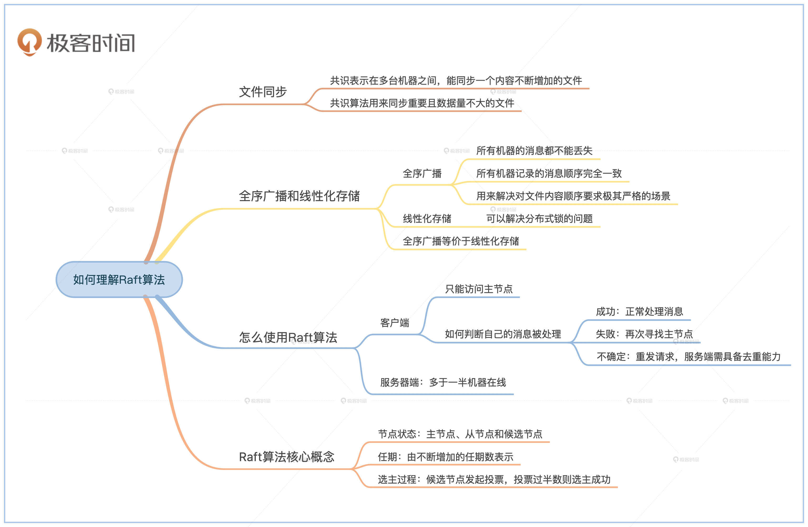

- 00 开篇词 如何成为金融级人才？.md.html
- 01 业务初探：扫了二维码之后发生了什么？.md.html
- 02 原理解读：如何理解第三方支付的业务逻辑和系统组件？.md.html
- 03 产品大观：不同金融业务都有哪些技术实现要点？.md.html
- 04 领域驱动设计（上）：如何设计金融软件顶层架构？.md.html
- 05 领域驱动设计（下）：如何设计统一的金融业务模型？.md.html
- 06 计算输入的正确性：怎么选择正确时间的数据？.md.html
- 07 计算过程的正确性：如何设计正确的数据处理架构？.md.html
- 08 计算结果的正确性：怎么保证计算结果是正确的？.md.html
- 09 数据传输的质量：金融业务对数据传输有什么要求？.md.html
- 10 数据存储的合理性：金融业务可以不用关系型数据库吗？.md.html
- 11 系统优化：如何让金融系统运行得更快？.md.html
- 12 正确性分级（上）：单机无备份有哪几种不同的一致性？.md.html
- 13 正确性分级（中）：多机无容灾有哪几种不同的一致性实现？.md.html
- 14 正确性分级（下）：多机有容灾有哪几种不同的一致性？.md.html
- 15 分布式正确性的存在性（上）：什么情况下不存在分布式共识算法？.md.html
- 16 分布式一致性（下）：怎么理解最简单的分布式一致性算法？.md.html
- 17 正确性案例（上）：如何实现分布式的事件溯源架构？.md.html
- 18 正确性案例（中）：常见分布式数据方案的设计原理是什么？.md.html
- 19 正确性案例（下）：如何在运行时进行数据系统的动态分库？.md.html
- 20 容灾（上）如何实现正确的跨机房实时容灾？.md.html
- 21 容灾（下）：如何通过混沌工程提高系统稳定性？.md.html
- 春节策划第1期 分布式金融系统知识，你掌握了多少？.md.html
- 春节策划第2期 读书如抽丝，为你推荐一些我读过的好书.md.html
- 春节策划第3期 如何运用架构知识解读春运买票和手游案例？.md.html
- 答疑集锦（一） 思考题解析与外汇架构知识拓展.md.html
- 答疑集锦（三） 思考题解析与数据库底层实现.md.html
- 答疑集锦（二） 思考题解析与账务系统优化.md.html
- 结束语 金融之道，与你同行，虽远尤欣.md.html
- 捐赠
16 分布式一致性（下）：怎么理解最简单的分布式一致性算法？
你好，我是任杰。这一讲我想和你聊一聊，怎么理解最简单的分布式一致性算法Raft。
在第14节课里，我们学习了在有容灾的分布式环境下的各种不同一致性情况，其中最重要的是线性一致性。线性一致性有非常多的好处，但是它的实现却非常困难。20多年前，计算机科学家终于找到了一个算法，但是非常晦涩难懂。
直到2014年，才出现了一个通俗易懂的算法，它就是Raft。从此以后，各种具有分布式一致性能力的数据系统便层出不穷，普通人也有能力和大型互联网公司一样，设计出一个在分布式环境下正确的系统。
既然Raft算法通俗易懂，实现细节我就不展开了，这节课我们重点来看看，Raft算法究竟能做什么，以及它应该怎么使用。
分布式一致性能解决的问题
文件同步
能实现分布式一致性的算法也叫作共识（Consensus）算法。我们在前一节课说过，共识需要满足以下3个条件：
1.终止性（termination）- 2.一致性（agreement）- 3.有效性（validity）
我们不是理论科学家，不需要去理解这些深奥的定义，而且就算我们理解了，也不一定能指导实际的开发工作。所以，我们需要的是一个更简单的结论。通俗一点来说，共识表示在多台机器之间，能同步一个内容不断增加的文件。
同步一个文件乍看起来非常简单，很多人都有远程拷贝文件的经历。但是，如果装有文件的机器出了问题怎么办呢？你可能会尝试找下一台有文件的机器重新拷贝。
不过这还没完，我们再深入想一想，你怎么确保你找的机器刚好就有完整的文件呢？而且文件内容还在不断增加，你又怎么能确定增加的内容也是正确的呢？
多亏有了共识算法，它帮我们解决了分布式环境下的这些不确定性问题，最后留给了我们一个确切的结果：那就是只要大部分机器都能正常工作，那么这些机器上的文件就是完全一样的。
这时候，机器上的文件可以分为两部分。一部分是确认已经同步好了的内容，这部分的内容你可以放心使用。另一部分是正在同步中的内容，这些都是临时内容，暂时不能使用。下面这幅图展示了这两部分内容的区别：

光说理论太抽象了，我们来看看共识算法最简单的一个应用场景，那就是跨机器的文件同步。比如你可以用共识算法来同步图片，但是这对于共识算法来说就有点小儿科了。共识算法更多是被用来同步非常重要但是数据量不大的文件。
那么，哪些数据是重要但不大的文件呢？
比如我们在进行云计算的时候，就需要知道机器都是哪些。这些描述信息都很重要，但是数据量不大，它们就可以存储在共识后的文件里。顺着这个思路，常见的配置文件信息、路由信息等等也都符合刚才说的特性，通常都会存储在有共识能力的数据系统里。
全序广播和线性化存储
不过，这么复杂的共识算法如果只是来解决文件的存储，依然还是有点大材小用。它真正的威力体现在能实现全序广播和线性化存储。
全序广播
全序广播的学名叫Total Order Broadcast。从名字就可以看出来，全序广播和广播的顺序有关系，事实也确实如此。在分布式环境下的全序广播需要满足这两个条件：
1.所有机器的消息都不能丢失。如果一台机器上出现了某个消息，那么这个消息一定能在所有其他机器上找到。- 2.所有机器记录的消息的顺序完全一致。
如果你把记录消息当作往文件末尾增加一行内容的话，全序广播的要求是不仅仅要同步文件，而且要求文件内所有内容的顺序也完全一致。
所以，全序广播可以用来解决对文件内容顺序要求极其严格的场景。比如在分布式环境下，数据库需要做数据的容灾备份。一种可行的做法是将数据库的日志文件通过全序广播的方式，广播到所有容灾节点。
在金融系统中，一个常见的对顺序要求很严格的场景是会计系统的账本。会计账本要求记账的顺序不能错，所以在对会计账本做数据容灾的时候，也可以采用全序广播的方式，这样可以保证账本能正确地备份到容灾节点内。
下面这幅图给你展示了全序广播。你要注意看里面的内容顺序：

顺便给你说一下，区块链的技术其实就是用共识算法生成了一个分布式的会计账本。
不同点在于，区块链的共识算法假设有的节点是恶意的，因此解决的是拜占庭问题。我们这个系列的假设是节点不是恶意的，因此解决的是非拜占庭问题。由于非拜占庭问题里有额外的正确性假设，算法可以用更少的资源来达成共识，速度也会更快。
线性化存储
说完了全序广播，我们再来看看线性化存储。线性化存储的学名叫Linearizable Storage。
你也许发现了，线性化存储中的“线性化”，和我们在第14节课讲的“可线性化”好像一样。没错，其实它们俩就是一个东西，只不过之前我们学的“可线性化”是理论，线性化存储是满足这个理论的实现。
线性化存储是一个分布式的数据存储集群。这个集群给你提供一些数据操作，比如你可以修改数据，或者读取数据。线性化在这里保证了你的操作是可线性化的。
那什么叫“操作是可线性化”呢？我们来重温一下第14节课的内容。如果一系列操作是可线性化的，那么你就可以把这些操作重新排序。排序之后，这些操作能先后顺序执行，并且最后生成合理的结果。
既然我们花了这么大精力讲解这么深奥的定义，那它一定能解决很复杂的问题。没错，线性化存储能解决的一个标志性问题是分布式锁。
你如果学过数据库，那么一定知道单机版的锁。锁操作的顺序非常重要。谁先加锁，谁就能访问资源。后加锁的人必须要等前面的人释放了锁之后，才能加锁成功。
在单机版的情况下，锁的实现非常简单，一般会利用特殊CPU指令，甚至用纯软件也可以实现。
但是在分布式情况下，锁的实现会变得非常复杂。这是因为如果只用一台机器来保存锁的状态，那么这台机器可能会出问题。
但是，如果复制锁的状态到其他机器，那么就会出现我们在第14节课讲到的各种不一致情况。
尽管线性化存储是由多台机器组成的，但你在所有这些机器上，操作的顺序都是完全一样的。因此，如果你在一台机器上获得了锁，那么你在其他所有机器上也获得了这个锁，这样就真正实现了分布式锁。
有了分布式锁之后，数据系统就有了很多高级的处理能力。比如你可以在云计算环境提供一个有容灾能力的锁服务，然后用这个锁服务来实现分布式事务。
全序广播等价于线性化存储
分布式理论有一个很有用的结论是，共识能力等价于全序广播，也等价于线性化存储。因此全序广播和线性化存储之间也是等价的。
既然这两者是等价的，那么我们就可以放心地去使用了。不过，这里我还是给你简单做一下证明，在证明的过程中会用到分布式状态机这个概念。
分布式状态机是我们第7节课事件溯源设计的分布式版本，我会在下节课给你详细讲解。这里我们先看看它能做什么。
首先，我们说说怎么用线性化存储实现全序广播，实现方法很简单。线性化存储可以实现分布式锁，你在广播任何一条消息之前，会先获取一个分布式锁。
当你拿到锁之后，给所有机器发送这条消息。等你确认了所有机器都收到了这个消息之后，再释放锁。
接下来，我们再看看怎么用全序广播实现线性化存储，这里就需要分布式状态机了。你将想加锁的命令通过全序广播发给所有机器。每台机器上都有自动机。你的加锁操作是事件溯源架构里的命令，而所有已经获得了的锁是事件溯源架构里的状态。
如果命令是合理的，也就是说现在还没有其他人有这个数据的锁，那么自动机会生成的事件溯源架构里的事件，也就是你已经获得了锁，并接着更新状态，同时将结果通知给你。这样就实现了分布式锁。
怎么使用Raft算法
前面我们已经了解了分布式一致性能解决的问题，但实际使用时，想要用好Raft算法还是有不少注意点，我们分别从客户端和服务端两个角度来看看。
客户端
由于Raft算法是一种共识算法，所以我们可以通过Raft来实现文件同步、全序广播和线性化存储。一般来说，我们会很少自己实现Raft算法，而是通过云服务来访问集群提供的功能。
这时候作为客户端，你需要了解应该怎么使用Raft才是正确的。否则尽管集群提供了共识能力，你的使用方法不对，还是会出错。
Raft算法有一个主从（Leader and Follower）的概念。在任何一个时间点，整个集群最多只有一个主节点，其他的都是从节点。
主节点是唯一会处理你请求的节点，所以你所有的请求都需要发送给这个主节点，主节点负责将你的请求正确地同步给剩下的从节点。
共识算法对同步的正确性有一个定义。当这个定义满足了之后，主节点会通知你请求已经处理成功。你需要注意的规律是每台机器的主从角色是会一直变化的，但是共识算法会保证不管怎么变化，集群里最多只有一台机器是主节点。
讲完主从的概念之后，我就要说说想正确使用Raft算法，我们第一个需要注意的事情，那就是你只能访问主节点。
分布式环境下机器会宕机，因此主节点也会出问题。这时候你需要不断尝试集群剩下所有的节点，找到谁是主节点。
如果Raft实现过于简单，你很难分出谁是主节点，这时候你需要一台一台机器去问，如果问不出来就一直轮询。
Raft实现得好的话，如果你问的机器不是主节点，它会告诉你，它心中的主节点是谁。你按照这个提示去找的话，有很大概率能找到真正的主节点。如果它恰巧不再是主节点了，那么你会拿到下一个提示，最终你会找到当前真正的主节点。
我们再来看看第二个注意点，那就是怎么判断自己的消息已经被处理了。我们在第2节课讲异步处理架构的时候提到过，异步系统的请求有三种，分别是成功、失败和不确定。Raft算法也有这三种状态。
如果Raft告诉你消息成功处理，那么消息一定是通过全序广播保存到了所有正常的机器上，你可以放心地处理下一个消息。
如果Raft告诉你失败，那么绝大多数情况是因为你访问的机器不再是主节点。这时候你需要再次寻找主节点在哪里。
如果Raft什么都没有告诉你，那有可能服务器端已经成功处理，或者处理失败。这时候你需要假设处理失败，然后重发请求。重发请求可能会造成同一个请求重复多次，因此服务器端一定需要有去重的能力。
服务器端
从用户的角度来看，服务器端主要是要考虑容灾能力。Raft协议的正常工作不需要所有机器全都在线，只要多于一半的机器在线就可以了。
因此。我们通过Raft实现的全序广播或者线性化存储都具有一定的容灾能力。我会在后面的第20节课里，详细讲解应该如何选择容灾的力度。
Raft算法核心概念
说到这里，你应该能正确地使用Raft算法了。
不过，我还是建议你再稍微了解一下Raft算法的核心概念，这样你在使用Raft算法的时候，就能弄清楚为什么你的使用是正确的，这就是我们在开篇词里提到的，知其然而知其所以然。
Raft里每个节点都有三个状态：主节点、从节点和候选节点（Candidiate）。
主从节点我们在前面已经讲过了。候选节点是未来可能的主节点。如果某台机器发现集群里好像没有主节点了，那么它会把自己变成候选节点，然后尝试通过一个选主过程将自己变成主节点。因此，系统中可能会有多个候选节点存在。
下面这幅图展示了节点的这几个状态变化：

Raft算法里有一个重要的概念是任期（Term）。任期是一个不断递增的正整数。每个成功当选的主节点都有自己的任期数。随着时间的推移，历任主节点的任期数一定不断在增加，绝不会不变或者倒退。
在正常的情况下，主节点会通过心跳机制将自己的任期数定时发给所有其他节点。节点在收到主节点的心跳消息之后会保持在从节点状态。我们一般把这个心跳过程叫作主节点的压制效果。
一旦分布式系统出了问题，比如断网或者主节点消失，主节点就无法再压制其他节点。这时候节点会纷纷将自己的状态变为候选节点，参与选主过程。
选主过程很复杂，不过你跟着我的思路来理解，就能把它弄明白了。
简单来说，每个节点将自己收到的最后一个任期数加一，然后问其他节点自己的任期数是不是最高的。
如果有一半及以上的节点同意你的任期数是最高的，那么你就变成了主节点，同时通过心跳机制压制其他所有节点，阻止集群中再出现新的主节点。
最后，我们再说一下Raft的存储。Raft实现了线性化存储，因此在本地会维护一个自增不减的日志文件，里面记录了所有的用户请求。这些请求的前面一部分是已经同步过了的内容，而后面一部分是正在同步的内容。已经同步过的内容是安全的，你可以放心访问。
Raft这个算法，我们就说到这里。Raft虽然是最简单的共识算法，但是它依然比较复杂，主要体现在如何实现选主过程和主节点的压制过程上。如果你有兴趣，可以去Raft的官方网站查看算法和论文的细节。
小结
这节课我们学习了怎么理解最简单的分布式一致性算法Raft。
首先，我们分析了分布式一致性能解决的问题。分布式一致性在分布式环境下能正确地同步文件，同时也能做全序广播和线性化存储。
接下来，我们又讨论了如何使用Raft算法。Raft的客户端需要永远只访问主节点。如果主节点没有反馈消息处理成功，那么你就需要一直重试。Raft的服务器端可以根据情况选择容灾能力的大小。
Raft的算法有两个核心概念。一个是节点的状态，分为主节点、从节点和候选节点三种。另一个概念是任期。算法的运行阶段被分为一个个的任期，任期由一个不断增加的任期数来表示。Raft算法能在分布式环境下计算出正确的任期数和节点状态。
金融系统的核心组件在分布式环境下一般要求具有线性一致性，因此无论是核心组件自己，还是周边的数据系统，都需要通过共识算法来实现线性一致性。
偏底层的基础架构需要用共识算法来实现线性化存储，以及用线性化存储实现的分布式锁和分布式事务。而偏上层的应用需要用共识算法来实现分布式状态机，保证业务在多机情况下的一致性。

思考题
我们在第14节课讲了分布式事务。分布式事务的原理是：通过协调者的本地事务来协调各个节点的事务执行状态。
因此，分布式事务能不能正确运行，这取决于协调者的本地数据库。这个本地数据库就是系统的单点，一旦出了问题，整个分布式事务就不能顺利进行。
所以，为了提高分布式事务的容灾能力，我们需要解决协调者的单点问题。那么问题来了：
1.你能分析一下，这个问题的本质是我们这节课讲的哪个问题吗？- 2.如果你要解决单点问题的话，可以怎么解决呢？
欢迎你在留言区记录你的疑问和收获。如果这节课对你有启发，也欢迎转发给你的同事、朋友，和他一起探讨Raft算法的应用。
© 2019 - 2023 Liangliang Lee. Powered by gin and hexo-theme-book.